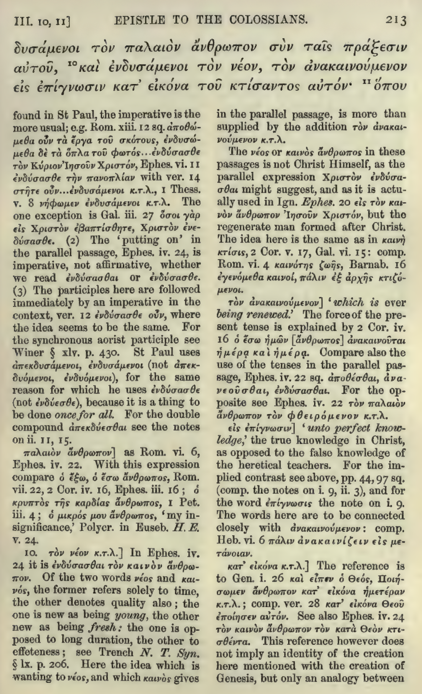

项目描述
基本框架
该项目的主体是对陈希增弟兄《属灵古典名著评介》的电子化。主要入口是index.html，剩余的bibliography.html是书目一览表，special_section.html是英语读者专栏，ch1.html到ch6.html则是第一到第六章。
bibliography.html里面的添加了许多超链接，一些超链接是指向互联网上现存的资源，另一些则是该项目在开发中的电子书资源。目前我的计划是，将该书目一览表中所有能找到的书籍资源电子化，并提供中、英、中英对照三版本（英文原文的识别由AI完成，对应中文的翻译同样由AI完成），并以超链接形式在bibliography.html里放置入口，方便读者浏览。
书籍资源电子化
书籍电子化是指，在bibliography.html里以超链接的形式添加所有对应公开书籍的电子化版本，方便读者阅读。由于原先的书籍大多是保存在Archive上的PDF书籍，因此总体操作流程包括
1 | |
因为目前有海量的书籍资源需要处理，所以进行如下标准化操作：
- 所有书籍的网页版展示遵循同一个模版。
- 该模版需要把书籍前言页、目录页、章节页等分散在不同的网页中。
- 排版应尽可能美观。
- 每一个具体内容页面应该用按钮在三种显示模式之间切换：原文、中译、原文/中译对照。
- 对照模式应原文一段、中译一段。
- 生成的网页版文件统一存放在当前目录下的books目录下，每本书单独一个文件夹。
- 生成网页版文件后，程序提供入口html文件地址。如 Bible Synopsis 的入口文件地址为
./books/Bible_Synonpsis_J_N_Darby/entry.html。
- YAML 文件中同时储存书籍原文（可能为英语，也可能为其他语言）以及对应的中文翻译。原文与翻译是同一段条目下的不同分点，例如
1 | |
- 圣经注释类书籍有特定的格式，其常会在一页的顶部有两三行大字的希腊原文或希伯来原文，然后余下的小字内容是注释的内容。
- MinerU 或多模态AI会直接将这页内容按上下顺序识别出来。例如，针对图片，识别结果为：
1 | |
识别后应将这页顶部的希腊文的单独提取出来，和之前几页顶部的希腊文合并起来为1个段落，并放在所有对其注解的最前面。
2. AI 在整理的时候将本章所有的脚注提取出来，放在本章的末尾。因为一章的内容都应该放在一个html中。
- 生成pdf时基于AI整理得到的YAML，每本书籍利用本地LaTex生成三个PDF文档：原文、中译、原文/中译对照。
- 三类文档的LaTex模版应当固定。
- 目前平台是MacOS，相关的中文PDF字体等板式设置应该对应优化。
- 生成的文档应该尽可能美观。
- 对照文档的PDF格式应该要原文一段，中译一段。原文与中译之间的段间距小于该整段（原文+中译）与其他整段之间的间距。
- 生成的用于编译的tex文件应该放在单独的目录下，如 Bible Synopsis 的入口原文tex文件地址为
./pdf_output/Bible_Synonpsis_J_N_Darby/original/main.tex，入口中文tex文件地址为./pdf_output/Bible_Synonpsis_J_N_Darby/translation/main.tex，入口对照tex文件地址为./pdf_output/Bible_Synonpsis_J_N_Darby/bilingual/main.tex，